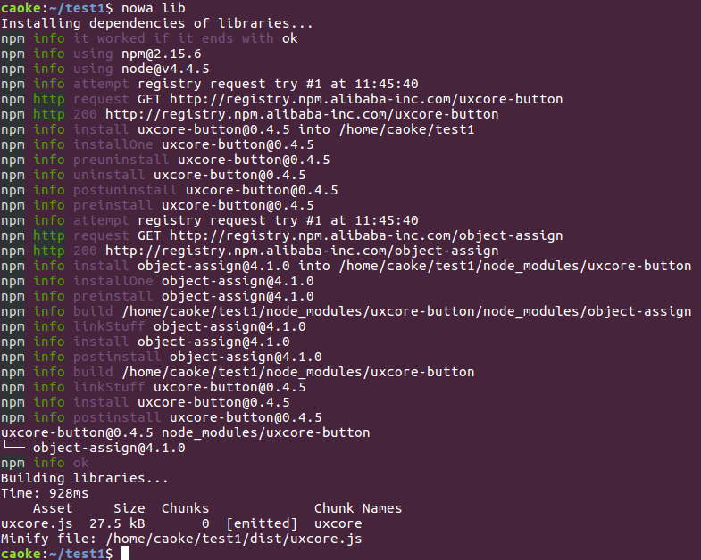

组件库的定制构建
使用
可以通过 nowa lib 命令来完成组件库的定制构建。
如果提示找不到 lib 命令，请通过
nowa install lib来安装
nowa lib
该命令必须使用在通过 nowa init 创建的项目中，请在项目根目录下执行。

配置
nowa lib 会读取 abc.json 中的 libraries 参数，按配置构建出所有的依赖库。
一个典型的配置如下：
abc.json
{
"options": {
"libraries": {
"Uxcore": {
"output": "uxcore.js",
"mappings": {
"Button": "uxcore-button@~0.4.0"
}
}
}
}
}
其中
Uxcore是构建出的库对外暴露的全局变量output定义输出的文件名，输出文件会放在--dist配置的目录下，另外也会拷贝一份到src/lib目录mappings定义了全局变量下各个属性和组件的对应关系，其中组件可带上语义化版本号（如果不带的话默认取最新版）
对于以上的配置，nowa lib 的执行过程
- 首先安装组件依赖
npm install uxcore-button@~0.4.0 -d
- 然后生成临时文件
window['Uxcore'] = {
Button: require('uxcore-button')
};
- 以这份临时文件为构建入口（entry）进行 webpack 构建，输出
uxcore.js - 对输出文件进行压缩，生成
uxcore.min.js - 拷贝
uxcore.js和uxcore.min.js到src/lib目录（为避免dist目录冲突，一般会把dist目录移出版本管理，所以把src/lib目录拿来用于存储依赖库文件）
参数
nowa lib 接受以下候选参数：
-d, --dist <dir>输出代码目录，默认指向dist-o, --loose使用 babel es2015 的宽松模式来做代码转换-c, --keepconsole保留源代码中的console.log，默认会删除--skipminify跳过压缩任务，默认会进行代码压缩--libraries依赖库映射配置--skipinstall跳过安装（将使用 node_modules 中已安装的组件），默认为false--npm <npm>安装使用的 npm，默认npm--polyfill引入 babel 的 polyfill，可直接使用 Object.assign 等类方法和 Map、Set、Promise 等类，默认为false